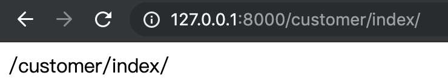

当前端请求经过WSGI与中间件的处理后，到达Django的url控制器进行路径匹配。如果路径匹配成功url控制器会指定对应的视图函数进行逻辑处理，如果路径匹配不成功会返回404错误给前端。
分组的概念
路由控制器中通过分组将url匹配到的数据传给视图函数处理。
Django路由控制器中的分组包括无名分组与有名分组。
无名分组
像这种形式的路由匹配的格式就是无名分组：
re_path(r'^articles/([0-9]{4})/([0-9]{2})/$',views.month_archive)
需要注意的一点是：如果使用无名分组去获取url中的数据，视图函数中的参数是有顺序的，视图函数中参数的顺序就是传入参数的顺序：
# 第一个参数永远是request
# year接收的是[0-9]{4}这个规则匹配到的数据，month接收的是[0-9]{2}这个规则匹配到的数据
def month_archive(request,year,month):
print(year)
print(month)
xxx
有名分组
使用有名分组的方式如下：
re_path(r'^articles/(?P<year>[0-9]{4})/(?P<month>[0-9]{2})/$',views.month_archive)
使用有名分组的话视图函数接收参数的时候只需要指定对应变量的名字就好了：
# 不管year与month的位置怎么变，month永远拿到的是([0-9]{2})匹配到的数据，
# year永远拿到的是([0-9]{4})匹配到的数据
def month_archive(request,month,year):
print(year)
print(month)
xxx
路由给视图传参的另外一种方式
之前做项目的时候发现路由还可以通过这种方式给视图传参：
re_path('^index/(?P<year>[0-9]{4})/(?P<month>[0-9]{2})/$',views.index,{"name":"whw","age":18}),
访问:
http://127.0.0.1:8001/index/2000/12
视图函数中的情况如下：
def index(request,name,age,month,year):
print(month) # 12
print(year) # 2000
print(name) # whw
print(age) # 18
xxx
路由分发
路由的分发其实相当于程序的解耦，将不同应用的路由写在自己的app里面就好了，项目的总路由只负责将不同应用的url分发到相应的应用中即可。
假设我们在项目中创建了一个名为blog的应用，在这个app中创建一个urls.py文件作为应用分发的路由。
我们需要在与项目同名的那个目录的urls.py文件中做一下分发：
#引入include
from django.urls import path,re_path,include
#在urlpatterns列表中加下面这段“分发”的代码：
#写法一：
#如果这样写的话，我们在访问的时候是这样的:http://127.0.0.1:8000/blog/login/
#也就是说，想要访问blog的内容 http://127.0.0.1:8000/blog/ 是必不可少的
#注意这里blog后面的'/'必须得加
re_path(r'blog/',include('blog.url')
#写法二：
#但是如果我们这样写，访问blog里的代码就不用加blog了：http://127.0.0.1:8000/login/
#注意这里^后面不加‘/’
re_path(r'^',include('blog.urls'))
在blog应用中的urls.py中加入自己的路由匹配：
#将之前全局的有关blog里面的views.py文件的函数的操作都放到blog里的urls.py文件中：
from django.urls import path,re_path
from blog import views
urlpatterns = [
path('login/',views.login),
#路由配置————哪一个路径由哪一个视图函数去处理
#调用的时候会自动传一个request参数，如special_case_2003(request)
re_path(r'^articles/2003/$',views.special_care_2003),
#下面的效果跟上面一样，只不过是正则表达式的匹配方式不同，需要的函数还是写在blog的views.py文件中
# 注意这一个，有分组的话需要在views.py文件的相应的函数中多加一个参数：
re_path(r'^articles/([0-9]{4})/$',views.year_archive),
#有两个分组需要在views.py的相应的函数中多加两个参数：
re_path(r'^articles/([0-9]{4})/([0-9]{2})$',views.month_archive),
#有名分组
re_path(r'^articles/(?P<str_2>[a-z]{2})/(?P<str_1>[a-z]{1})/$',views.str_name1)
]
反向解析
当前端模板（提交请求）与视图逻辑（做重定向）需要用到传来的url时，将整个url当作参数并不是很方便。我们可以在路由中为每条url设置别名，其他地方需要使用这条url时只需要使用这个别名就可以了，这就是反向解析的作用。
路由中设置别名的方法 —— 只需要在视图的后面加上name=别名即可
re_path('^login/$',views.login,name="login"),
re_path('^index/$',views.index,name="index"),
反向解析在视图中的使用
基本都是做重定向用的：
from django.shortcuts import render,redirect
def index(request):
xxx
# 逻辑处理失败后重定向到登录页面
return redirect("login")
视图中处理不带分组的路由别名
当然视图中也可以通过别名找到传过来的url:
路由为：
re_path(r'^articles/2003/$',views.special_care_2003,name='s_c_2003'),
对应的视图：
# 引入reverse
from django.urls import reverse
def special_care_2003(request):
url = reverse('s_c_2003')
print(url)#前面设置的路由 /articles/2003/
return HttpResponse('哈哈! 2003')
视图中处理带分组的路由别名
分组的路由为：
re_path('^index/(?P<year>[0-9]{4})/(?P<month>[0-9]{2})/$',views.index,name="index"),
视图处理逻辑：
from django.urls import reverse
def index(request,month,year):
print(month) # 12
print(year) # 2000
# 有分组的reverse的用法！
url = reverse("index", args=(year,month))
print(url) # /index/2000/12/
xxx
反向解析在模板中的使用
我们做一个简单的登陆逻辑，路由如下
re_path('^login/$',views.login,name="LOG"),
模板文件如下
<form action="{% url 'LOG' %}" method="post">
{# csrf校验 #}
{% csrf_token %}
用户名: <input type="text" name="user" >
密码: <input type="password" name="pwd">
<input type="submit">
</form>
其实这里的action指向的是http://127.0.0.1:8000/login/这条路由。
{% url '别名' %}是反向解析的语法
反向解析的登陆认证实例
拿上面的登陆路由做一个简单的实例。
还是那条路由：
re_path('^login/$',views.login,name="LOG"),
模板中的内容如下：
<!DOCTYPE html>
<html lang="en">
<head>
<meta charset="UTF-8">
<title>Title</title>
<link rel="stylesheet" href="/static/whw1.css">
</head>
<body>
<form action="{% url 'LOG' %} method="post">
用户名: <input type="text" name="user" >
密码: <input type="password" name="pwd">
<input type="submit">
</form>
</body>
</html>
视图函数的内容如下：
from django.shortcuts import render, HttpResponse
# 注意这个函数必须要有一个形参 request
def login(request):
# 如果是GET请求则返回当前页面
if request.method == 'GET':
print('GET请求的数据:', request.GET)
# 这个函数必须得有return，而且是利用render渲染...
return render(request, 'login.html')
# 如果是POST请求方式则做校验
elif request.method == 'POST':
print('POST请求的数据:', request.POST)
# 注意：
# request.POST存的是form表单中name值作为key自己输入的值作为value的字典！
user = request.POST.get('user') # 这里的user与form表单中的name值对应
pwd = request.POST.get('pwd') # 这里的pwd与form表单中的name值对应
# 这里可以用数据库操作代替：：：
if user == 'whw' and pwd == '123':
return HttpResponse('OK!')
else:
return HttpResponse('ERROR!')
处理带参数的反向解析
实际中，我们在利用ajax给后台传入一个url时会带着参数。有些小伙伴喜欢用路由解析去给后台传url，所以在a标签中利用反向解析时会这样做：
<a href="{% url "del_book 1" %}">删除</a>
这样做完全没问题。
ajax处理的问题
但是，实际项目中常会用到ajax异步操作，如果你在ajax中这样写url的话：
var del_id = $('#del_id').text();
xxx
xxx
url:'{% url "del_book" del_id %}',
浏览器会给你返回一个这样的错误：路由中拿不到你传的这个参数~
这就说明：在ajax的反向解析中，不可以传一个“变量”
解决方案1
可以另辟蹊径，我们可以把需要的路由放在一个标签中，这个标签用模版的反向解析的语法获取到这个路由，然后再传给ajax的url：
//构建一个获取url的标签
<span id="del_url" class='hidden'>{% url 'del_book' 1 %}}</span>
。。。
//用一个变量接收这个路由：/del_book/1/
var u1 = $('#del_url').text();
$.ajax({
//url用这个变量u1
url:u1,
type:'post',
。。。
})
但是呢～聪明的你可能一眼就看出问题来了：你这个 1 是一个常量不是变量呀！我想加一个变量怎么办呢？请看方法2:
解决方案2
实际上，我们会通过模板语法去渲染页面~方法1中提到的“常量”其实可以在模板渲染的时候拿到，
既然我们能通过{{ obj.pk }}值可以获取到这个条目的id值~那可以在这个位置构建一个隐藏的标签：
<span class='hidden'>{% url "index" {{ obj.pk }} %}</span>
大家可以看到~这个span标签里存放着不就是我们需要的那个带动态参数的路径吗？接着利用jQuery的选择器拿到这个路径参数。
//假设这个span标签在我们点击的按钮的后面
var id_url = $(this).next().text();
然后，在url的data中就可以用这个路径了：
...
$.ajax({
url:id_url,
...
})
...
解决方案3
第三种解决方案是“路径拼接”～特别注意：这里的路径必须是一个全路径！
{# 获取要被删除的书籍的id #}
var del_id = $('#del_id').text();
$.ajax({
{# 拼接路径 #}
url:'/book/del_book/' + del_id +'/',
{#url:'{% url "del_book" del_id %}', //不可以这样写#}
type:'post',
。。。
})
名称空间
上面介绍了反向解析与路由别名的概念，也许聪明的你会提出这样一个问题：如果实际中不同的app的url出现了相同的别名怎么办呢？
Django为我们提供了名称空间解决上面的问题。
这里我做了一个demo为大家详细讲解名称空间的使用。
首先，我们新建一个名为NameSpace的Django项目，然后在里面创建两个应用，分别叫customer与payment，记得在settings中的INSTALLED_APPS中注册这两个应用～
接着，在template目录中分别创建两个项目的模板文件夹～而且让其中的两个网页名字一样，项目的具体结构如下：
.
├── NameSpace # 与项目同名的目录
│ ├── __init__.py
│ ├── settings.py
│ ├── urls.py # 项目的总路由
│ └── wsgi.py
├── customer # customer应用
│ ├── __init__.py
│ ├── admin.py
│ ├── apps.py
│ ├── migrations
│ │ └── __init__.py
│ ├── models.py
│ ├── tests.py
│ ├── urls.py # customer分路由
│ └── views.py # customer的视图
├── manage.py
├── payment # payment应用
│ ├── __init__.py
│ ├── admin.py
│ ├── apps.py
│ ├── migrations
│ │ └── __init__.py
│ ├── models.py
│ ├── tests.py
│ ├── urls.py # payment分路由
│ └── views.py # payment的视图
└── templates # 模板目录
├── customer
│ └── index.html # customer的index页面
└── payment
└── index.html # payment的index页面
路由分发
全局的urls文件中（跟项目名同名的目录里的文件我习惯叫全局文件）做路由分发：
urlpatterns = [
path('admin/', admin.site.urls),
re_path('^customer/',include('customer.urls')),
re_path('^payment/',include('payment.urls')),
]
customer目录中新建的urls文件
from django.urls import path,re_path
from customer import views
urlpatterns = [
re_path(r'^index/$',views.index,name='index'),
]
payment目录中新建的urls文件
from django.urls import path,re_path
from payment import views
urlpatterns = [
re_path(r'^index/$',views.index,name='index'),
]
视图函数
customer目录中的视图函数
from django.shortcuts import render,HttpResponse
from django.urls import reverse
def index(request):
if request.method == 'GET':
url = reverse('index')
print('customer_url:',url)
return HttpResponse(url)
payment目录中的视图函数
from django.shortcuts import render,HttpResponse
from django.urls import reverse
def index(request):
if request.method == 'GET':
url = reverse('index')
print('payment:',url)
return HttpResponse(url)
存在问题
大家可以看到：我在两个应用的分发路由中给两个不同的index路径（事实上，我们访问customer的indexs的路径其实是/customer/index/，同理payment的index的路径是/payment/index/）取了相同的别名index；而且在不同的视图函数中通过反向解析拿到了别名index对应的路径打印了出来并返回给浏览器。
现在我们试试实际的运行效果：
当我访问payment的index的时候确实打印出了正确的路径：
但是，当我访问customer的路径的时候出错了：这个url竟然被反向解析成了payment的index路径！
让我们再来看看后台打印的效果：从第二条数据可以看出来～浏览器明明收到的是customer的get请求，可是反向解析出来的index的路径却是另外一条路由！
实际中这样出现这样的问题是十分危险的！为了避免这种情况发生，可以利用名称空间解决。
名称空间解决
利用名称空间可以解决上面的问题～
首先我们在路由分发的时候为每条分发的路由加上名称空间：
urlpatterns = [
path('admin/', admin.site.urls),
# 分发的时候加上名称空间
re_path('^customer/',include(('customer.urls','customer'))),
re_path('^payment/',include(('payment.urls','payment'))),
]
两个应用的分发的路由中的写法还跟上面的一样。
在视图函数中进行反向解析的时候为每个别名加上自己的名称空间。
customer的视图函数：
from django.shortcuts import render,HttpResponse
from django.urls import reverse
def index(request):
if request.method == 'GET':
# 反向解析的时候加上名称空间
url = reverse('customer:index')
print('customer_url:',url)
return HttpResponse(url)
payment的视图函数：
from django.shortcuts import render,HttpResponse
from django.urls import reverse
def index(request):
if request.method == 'GET':
url = reverse('payment:index')
print('payment:',url)
return HttpResponse(url)
最后让我们看看结果：
（1）访问payment的结果：

（2）访问customer的结果：

（3）最后看看打印结果：
实际开发中名称空间不能重名
切记！实际开发中名称空间不能重名！
path方法
Django2版本路由匹配新增了path方法，另外re_path方法与Django1版本的url方法用法完全一致，其实就是正则匹配。
这里着重介绍一下path方法。
path方法解决的问题
（1）对于这样的路由匹配：
re_path('^index/(?P<year>[0-9]{4})/(?P<month>[0-9]{2})/$',views.index}
这里的year参数是str类型的。但是实际中如果我们想拿到一个int类型的值的话，还需要进行int(year)的转换。
做这种转换是有风险的，实际中可能会出现TypeError或者ValueError异常，使用path方法我们可以将这种转化在Django内部自动完成。
（2）还是拿上面的路由匹配为例，对于year这个变量，如果三个路由中都有它的话我们得写三遍：
re_path('^index/(?P<year>[0-9]{4})/$',views.index1},
re_path('^index/(?P<year>[0-9]{4})/(?P<month>[0-9]{2})/$',views.index2},
re_path('^index/(?P<year>[0-9]{4})/(?P<month>[0-9]{2})/666/$',views.index3}
而使用path方法只需要做一处修改即可。
使用path方法解决上面问题
rom django.urls import path,re_path
from blog import views
urlpatterns = [
re_path('^login$/',views.login,name='LOGIN'),
# 有名分组
re_path('^articles/(?P<y>[0-9]{4})/(?P<m>[a-zA-Z0-9]+$)',views.get_y_m),
### path方法
#这里的int是内置的转换器
path('articles/<int:year>/<int:month>/',views.get_year_month),
]
对应的视图函数如下：
from django.shortcuts import render,HttpResponse
# Create your views here.
def login(request):
if request.method == 'GET':
return render(request,'login.html')
elif request.method == 'POST':
user = request.POST.get('user')
pwd = request.POST.get('pwd')
if user == 'whw' and pwd == '123':
return HttpResponse('OK!')
else:
return HttpResponse('ERROR!')
def get_y_m(request,m,y):
print(y)
print(type(y))#这里默认的是str类型
return HttpResponse('y:%s;m:%s'%(y,m))
def get_year_month(request,year,month):
print(year,minth)
print(type(year),type(month))
return HttpResponse(year,month)
path的基本规则如下：
- 使用尖括号(<>)从url中捕获值。
- 捕获值中可以包含一个转化器类型（converter type），比如使用 捕获一个整数变量。
- 若果没有转化器，将匹配任何字符串，当然也包括了 / 字符。
- 无需添加前导斜杠。
path converters
这里就把它翻译成path转换器吧。
5种默认转换器
1、str,匹配除了路径分隔符（/）之外的非空字符串，这是默认的形式
2、int,匹配正整数，包含0。 #slug用的比较多——相当于匹配下面的字符串——省去了正则表达式
3、slug,匹配字母、数字以及横杠、下划线组成的字符串。
4、uuid,匹配格式化的uuid，如 075194d3-6885-417e-a8a8-6c931e272f00）—— 注意不能用?，它是GET请求数据左右部分的分隔符！
5、path,匹配任何非空字符串，包含了路径分隔符
自定义转换器的使用
对于一些复杂或者复用的需要，可以定义自己的转化器。转化器是一个类或接口，它的要求有三点：
1、regex 类属性，字符串类型
2、to_python(self, value) 方法，value是由类属性 regex 所匹配到的字符串，返回具体的Python变量值，以供Django传递到对应的视图函数中。
3、to_url(self, value) 方法，和 to_python 相反，value是一个具体的Python变量值，返回其字符串，通常用于url反向引用。
一个自定义转换器的例子
(1)在blog应用中，新建一个url_convert.py文件，这个文件新建一个类
注意这个类的名字可以随便取，但是类中的属性与方法名是固定的！
class FourDigitYearConverter:
#规则字符串
regex = '[0-9]{4}'
#to_python方法
def to_python(self, value):
return int(value)
#to_url方法——用于反向解析
def to_url(self, value):
return '%04d' % value
(2)使用register_converter 将其注册到URL配置中
#在blog的url.py文件中注册：
from django.urls import register_converter, path
#将写好的url_convert引入：
from blog import url_convert, views
#用yyyy做替换：
register_converter(url_convert.FourDigitYearConverter, 'yyyy')
from django.urls import path,re_path,register_converter
from blog import views,url_convert
register_converter(url_convert.four_year_to_int,'yyyy')
urlpatterns = [
re_path('^login/$',views.login,name='LOGIN'),
#有名分组+反向解析
re_path('^articles/(?P<y>[0-9]{4})/(?P<m>[a-zA-Z]+)/$',views.get_y_m),
path('articles/<yyyy:year>/<yyyy:month>',views.get_year_month),
]
#注意浏览器中要这样写：http://127.0.0.1:8000/blog/articles/1000/1234
#year跟month都是4位，因为规则是：regex = '[0-9]{4}'